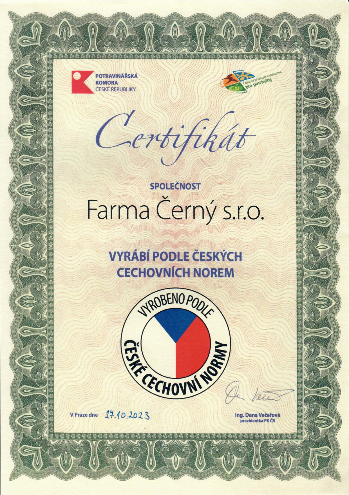

Czech Blue Poppy Seeds
for Food Industry
We supply premium Czech blue poppy seeds with guaranteed origin and consistent quality parameters for industrial food production. Suitable for bakeries, confectionery manufacturers and food processing companies across Europe.
Key Benefits
Guaranteed Czech Origin
Our blue poppy seeds are grown and processed in the Czech Republic in compliance with European food safety standards.
High Purity and Stable Quality
Modern cleaning and sorting technology ensures consistent parameters required for industrial processing.
Laboratory Tested Batches
Quality control is performed in accredited laboratories to ensure food-grade compliance.
Reliable Wholesale Supply
Annual production capacity of up to 2,000 tonnes enables stable long-term cooperation with industrial partners.
Technical Parameters
The parameters below represent our standard product specifications. Exact values are available on request.
Exact parameters can be adjusted based on harvest conditions and customer requirements.

Certificate of the Food Chamber of the Czech Republic
Produced according to Czech guild standards
Open PDF
| Product | Czech blue poppy seeds |
| Origin | Czech Republic |
| Use | Food processing and bakery industry |
| Purity | According to food industry standards |
| Quality control | Accredited laboratory testing |
| Traceability | Full batch traceability available |
Packaging & Deliveries
Bulk Packaging Options
- Big bag 500 kg
- Big bag 600 kg
- Big bag 1,000 kg
- Big bag 1,100 kg
- Big bag 1,200 kg
Truck Deliveries Across Europe
- Flexible logistics planning
- Reliable transport partners
- Full truck load deliveries
- Suitable for long-term supply contracts
Production Capacity
- Annual capacity up to 2,000 t
- Stable deliveries for industrial customers
- Long-term cooperation welcome
Who the Product is For
Industrial Bakeries
Consistent raw material supply for large-scale and artisan bakery production.
Food Manufacturers
Standardised quality parameters suitable for further processing.
Commodity Distributors
Long-term wholesale cooperation and export supply solutions.
Export Cooperation
We supply Czech blue poppy seeds to customers in the Czech Republic and across European markets. We are experienced in export logistics and offer flexible commercial terms for long-term partnerships.
Contact us
Looking for a reliable Czech
blue poppy seeds supplier?
Contact us to request a wholesale quotation or order a product sample. We will prepare an individual offer based on required volume and delivery schedule.